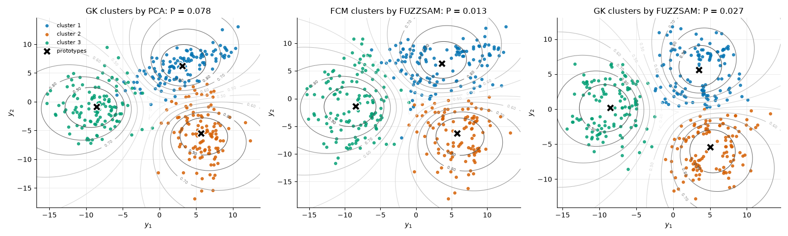
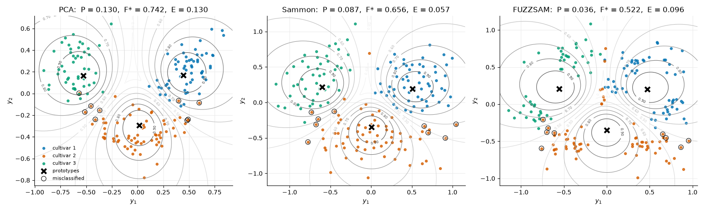
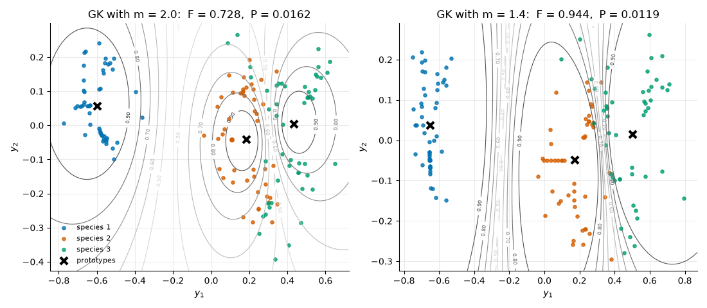
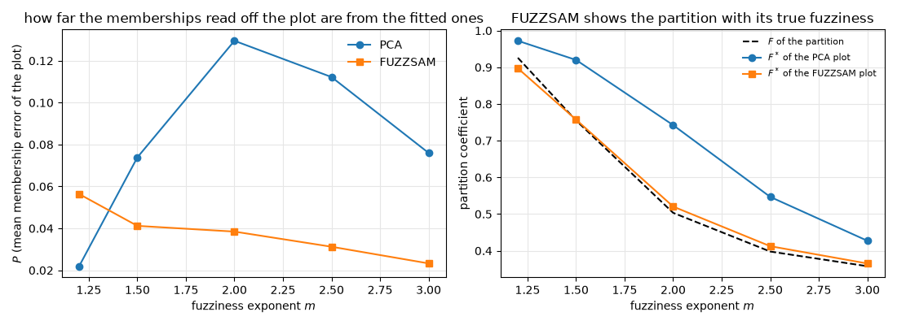

Note
Go to the end to download the full example code or to run this example in your browser via Binder.
Fuzzy Sammon mapping: projecting clusters, not just data#
Sammon mapping preserves the Euclidean distances between all pairs of samples. A fuzzy clustering, however, is defined by the \(N\times c\) distances between the samples and the cluster prototypes, measured with the norm of the clustering algorithm (Euclidean for FCM, adaptive Mahalanobis norms for Gustafson–Kessel, and so on). The fuzzy Sammon mapping (FUZZSAM) preserves these distances, weighted by the memberships,
and recomputes the projected centers \(\mathbf{z}_i\) as the weighted means of the projected points after every step. Each cluster becomes a single point in the plane, and the membership contours drawn around it are circles, so a cluster whose prototype fits the data well shows up as a compact round group. This example first visualizes elongated 4-D clusters found by GK and then reproduces the wine-data comparison of the MATLAB toolbox manual with the quality measures \(P\), \(F\), \(F^*\), and \(E\).
import matplotlib.pyplot as plt
import numpy as np
import pandas as pd
from sklearn.metrics import adjusted_rand_score
from sklearn.preprocessing import MinMaxScaler
from fuzzyclust import FCM, GK
from fuzzyclust.datasets import load_iris, load_wine
from fuzzyclust.viz import (
FuzzySammon,
Sammon,
make_ellipsoids,
pca_projection,
plot_projection,
projection_quality,
)
Ellipsoidal clusters in four dimensions#
Three elongated Gaussian clusters with random orientations. GK recovers them with its cluster-specific norms; FCM, with its spherical norm, does not.
X, y = make_ellipsoids(n_clusters=3, n_samples_per_cluster=120, n_features=4, elongation=5.0, separation=5.0,
random_state=0)
fcm = FCM(n_clusters=3, random_state=0).fit(X)
gk = GK(n_clusters=3, random_state=0).fit(X)
print(f"ARI with the generating labels: FCM {adjusted_rand_score(y, fcm.labels_):.2f}, "
f"GK {adjusted_rand_score(y, gk.labels_):.2f}")
# [snippet:fuzzsam_gk]
Y_pca, Z_pca, _ = pca_projection(X, 2, centers=gk.cluster_centers_)
fsam_fcm = FuzzySammon(n_components=2, max_iter=100, alpha=0.4, init="pca").fit(fcm, X)
fsam_gk = FuzzySammon(n_components=2, max_iter=100, alpha=0.4, init="pca").fit(gk, X)
quality_pca = projection_quality(gk.membership_, Y_pca, Z_pca, m=gk.m, X=X)
quality_gk = fsam_gk.quality(X)
# [/snippet:fuzzsam_gk]
fig, axes = plt.subplots(1, 3, figsize=(16, 4.8))
plot_projection(Y_pca, Z_pca, U=gk.membership_, m=gk.m, ax=axes[0], levels=6)
axes[0].set_title(f"GK clusters by PCA: P = {quality_pca['P']:.3f}")
plot_projection(fsam_fcm.embedding_, fsam_fcm.embedded_centers_, U=fcm.membership_, ax=axes[1], levels=6,
legend=False)
axes[1].set_title(f"FCM clusters by FUZZSAM: P = {fsam_fcm.quality()['P']:.3f}")
plot_projection(fsam_gk.embedding_, fsam_gk.embedded_centers_, U=gk.membership_, m=gk.m, ax=axes[2], levels=6,
legend=False)
axes[2].set_title(f"GK clusters by FUZZSAM: P = {quality_gk['P']:.3f}")
plt.tight_layout()

ARI with the generating labels: FCM 0.82, GK 0.96
In the PCA picture (left), the elongated clusters cut across the circular membership contours that the picture implies, and the memberships read off the plot differ from the GK memberships (\(P\) is large). FUZZSAM maps the distances of the clustering algorithm. The FCM result (middle) shows clusters that overlap and spill into each other’s contours, a sign that the spherical prototype does not fit; the GK result (right) shows three compact round groups around their centers, because the GK norm already “sees” the ellipsoids as spheres. As the FUZZ-IEEE paper puts it, the distance measure of the prototype is transformed into the Euclidean distance in the plane, so a distorted picture indicates that the prototype or the number of clusters is wrong.
Wine data: PCA, Sammon, and FUZZSAM compared#
The 178 wines, described by 13 chemical attributes, are range-scaled and
clustered with FCM (\(c=3\)) as in the case study of the toolbox manual
(visual_call). As there, the Sammon mapping is initialized with the PCA
scores and FUZZSAM with the Sammon result.
wine = load_wine()
Xw = MinMaxScaler().fit_transform(wine.data)
fcm_w = FCM(n_clusters=3, random_state=0, tol=1e-6).fit(Xw)
# [snippet:wine_table]
Y_pca, Z_pca, _ = pca_projection(Xw, 2, centers=fcm_w.cluster_centers_)
sammon = Sammon(max_iter=100, alpha=0.4, init=Y_pca).fit(Xw)
Um = fcm_w.membership_**2
Z_sam = (Um.T @ sammon.embedding_) / Um.sum(axis=0)[:, None]
fsam_w = FuzzySammon(max_iter=100, alpha=0.4, init=sammon.embedding_).fit(fcm_w, Xw)
rows = {
"PCA": projection_quality(fcm_w.membership_, Y_pca, Z_pca, m=2.0, X=Xw),
"Sammon": projection_quality(fcm_w.membership_, sammon.embedding_, Z_sam, m=2.0, X=Xw),
"FUZZSAM": fsam_w.quality(Xw),
}
table = pd.DataFrame(rows).T.rename(columns={"F_star": "F*"})
# [/snippet:wine_table]
print(table.round(4))
P F F* E
PCA 0.1295 0.5033 0.7424 0.1301
Sammon 0.0869 0.5033 0.6564 0.0575
FUZZSAM 0.0364 0.5033 0.5223 0.0959
\(P\) is the mean absolute difference between the FCM memberships and the memberships a viewer would infer from the plot; \(F\) and \(F^*\) are the partition coefficients of the two, and \(E\) is the Sammon stress of the embedding. FUZZSAM has by far the smallest \(P\) and an \(F^*\) close to \(F\), so the plot is faithful to the partition. Its Sammon stress is larger than that of the Sammon mapping because it does not try to preserve the inter-sample distances. The values agree closely with Table 3.5 of the toolbox manual (identically for PCA, within 0.006 for the other two maps). To judge the classification, the points whose cluster does not match their cultivar are circled.
def misclassified(labels, target):
"""Map every cluster to its majority class and flag the disagreements."""
mapping = {i: np.bincount(target[labels == i]).argmax() for i in np.unique(labels)}
return np.array([mapping[i] for i in labels]) != target
mis = misclassified(fcm_w.labels_, wine.target)
print(f"misclassified wines: {mis.sum()} of {len(mis)} ({100 * mis.mean():.1f}%)")
fig, axes = plt.subplots(1, 3, figsize=(16, 4.8))
for ax, name, (Y, Z) in zip(
axes, rows, [(Y_pca, Z_pca), (sammon.embedding_, Z_sam), (fsam_w.embedding_, fsam_w.embedded_centers_)],
strict=True,
):
plot_projection(Y, Z, labels=wine.target, misclassified=mis, ax=ax, levels=7, legend=(name == "PCA"),
label_prefix="cultivar")
ax.set_title(f"{name}: P = {rows[name]['P']:.3f}, F* = {rows[name]['F_star']:.3f}, E = {rows[name]['E']:.3f}")
plt.tight_layout()

misclassified wines: 9 of 178 (5.1%)
Colors mark the three cultivars, and the contours are the recomputed membership levels. With PCA and Sammon mapping, many points lie far from “their” contour (the cluster borders in the plane do not coincide with the FCM borders); with FUZZSAM the clusters appear as FCM sees them.
The fuzziness is visible too#
Because the memberships recomputed from the plot approximate the fitted ones, the plot also shows how fuzzy the partition is. The iris data are clustered with GK for \(m=2\) and \(m=1.4\) (FUZZ-IEEE paper, Fig. 2), and the same iso-membership curves are drawn in both panels. With the smaller exponent, the partition is crisper (larger \(F\)) and the curves of high membership expand to enclose almost all points of a cluster.
iris = load_iris()
Xi = MinMaxScaler().fit_transform(iris.data)
levels = np.arange(0.4, 1.0, 0.1)
fig, axes = plt.subplots(1, 2, figsize=(11, 4.8))
for ax, m in zip(axes, (2.0, 1.4), strict=True):
model = GK(n_clusters=3, m=m, random_state=0, tol=1e-6).fit(Xi)
fs = FuzzySammon(max_iter=100, alpha=0.4).fit(model, Xi)
plot_projection(fs.embedding_, fs.embedded_centers_, labels=iris.target, m=m, ax=ax, levels=levels,
legend=(m == 2.0), label_prefix="species")
q = fs.quality()
ax.set_title(f"GK with m = {m}: F = {q['F']:.3f}, P = {q['P']:.4f}")
plt.tight_layout()

Parameter study: the fuzziness exponent and the faithfulness of the map#
The exponent \(m\) of the clustering determines how fuzzy the partition is (on the wine data, \(F\) falls from 0.93 to 0.36 between \(m=1.2\) and \(m=3\)), and the quality measures of a projection must be read against that. For every \(m\), the FCM partition is projected by PCA and by FUZZSAM, and \(P\), \(F^*\), and \(E\) are recorded. FUZZSAM keeps \(F^*\) within 0.03 of \(F\) for every exponent, whereas the PCA picture suggests a partition of different fuzziness. The \(P\) of the PCA picture is small only for a nearly crisp partition, which any projection reproduces well, and is largest around \(m=2\).
# [snippet:m_scan]
m_values = (1.2, 1.5, 2.0, 2.5, 3.0)
scan = []
for m in m_values:
fcm_m = FCM(n_clusters=3, m=m, random_state=0, tol=1e-6).fit(Xw)
Y_p, Z_p, _ = pca_projection(Xw, 2, centers=fcm_m.cluster_centers_)
q_pca = projection_quality(fcm_m.membership_, Y_p, Z_p, m=m, X=Xw)
q_fs = FuzzySammon(max_iter=100, alpha=0.4, init=Y_p).fit(fcm_m, Xw).quality(Xw)
scan.append({"m": m, "F": q_fs["F"], "P (PCA)": q_pca["P"], "P (FUZZSAM)": q_fs["P"],
"F* (PCA)": q_pca["F_star"], "F* (FUZZSAM)": q_fs["F_star"], "E (FUZZSAM)": q_fs["E"]})
scan = pd.DataFrame(scan).set_index("m")
# [/snippet:m_scan]
print(scan.round(4))
fig, axes = plt.subplots(1, 2, figsize=(11, 4))
axes[0].plot(m_values, scan["P (PCA)"], "o-", label="PCA")
axes[0].plot(m_values, scan["P (FUZZSAM)"], "s-", label="FUZZSAM")
axes[0].set_xlabel("fuzziness exponent $m$")
axes[0].set_ylabel("$P$ (mean membership error of the plot)")
axes[0].set_title("how far the memberships read off the plot are from the fitted ones")
axes[0].legend(frameon=False)
axes[0].grid(True, color="0.9")
axes[1].plot(m_values, scan["F"], "k--", label="$F$ of the partition")
axes[1].plot(m_values, scan["F* (PCA)"], "o-", label="$F^*$ of the PCA plot")
axes[1].plot(m_values, scan["F* (FUZZSAM)"], "s-", label="$F^*$ of the FUZZSAM plot")
axes[1].set_xlabel("fuzziness exponent $m$")
axes[1].set_ylabel("partition coefficient")
axes[1].set_title("FUZZSAM shows the partition with its true fuzziness")
axes[1].legend(frameon=False, fontsize=8)
axes[1].grid(True, color="0.9")
plt.tight_layout()

F P (PCA) P (FUZZSAM) F* (PCA) F* (FUZZSAM) E (FUZZSAM)
m
1.2 0.9259 0.0220 0.0564 0.9722 0.8973 0.1043
1.5 0.7551 0.0739 0.0412 0.9200 0.7573 0.0986
2.0 0.5033 0.1295 0.0385 0.7424 0.5204 0.0989
2.5 0.3979 0.1122 0.0312 0.5468 0.4124 0.0955
3.0 0.3579 0.0760 0.0233 0.4273 0.3653 0.0998
Take-away#
The fuzzy Sammon mapping projects the quantities the clustering algorithm works with: the membership-weighted distances between samples and prototypes, measured with the algorithm’s own norm. Every prototype becomes a point, the iso-membership curves become near-circles, and the memberships a viewer reads off the plot agree with the fitted ones (\(P\) small, \(F^*\approx F\)) for any exponent and any algorithm. This makes the picture diagnostic: elongated clusters that appear round under GK but smeared under FCM show that the spherical prototype does not fit, and overlapping groups indicate that the number of clusters is doubtful. The price is that inter-sample distances are no longer preserved (the Sammon stress \(E\) is higher than for the classical mapping) and that the map, like Sammon’s, does not extend to new data.
Total running time of the script: (0 minutes 1.399 seconds)